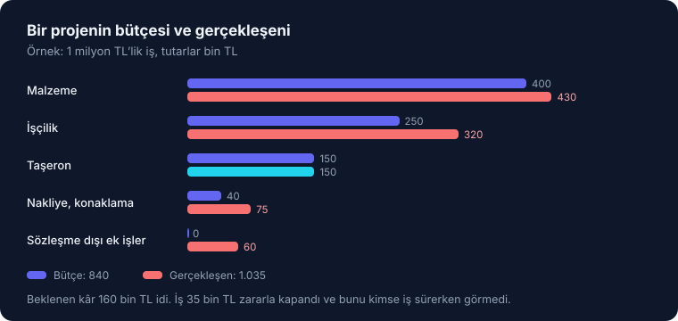

Proje Kârlılığı
Proje kârlılığı nasıl ölçülür? İş biterken değil, sürerken görmek
Proje bazlı çalışan firmalarda kâr çoğu zaman yılda bir kez öğrenilir. Mali müşavir bilançoyu çıkarır, firmanın o yıl ne kadar kazandığı belli olur. Hangi projenin kazandırdığı, hangisinin zarar ettiği ise o tabloda görünmez. Bu yazıda proje kârlılığının neden ölçülemediğini ve ölçmek için nelerin kayda geçmesi gerektiğini anlatıyoruz.

Toplam kâr neyi saklıyor?
Yıl sonunda firma kâr etmişse herkes rahatlar. Oysa o toplamın içinde iyi kazandıran işler ile zarar eden işler birbirini götürmüş olabilir. Aşağıdaki örnekte firma yılı kârla kapatıyor, ama en büyük projesi zarar etmiş.

Bu tabloyu görmeyen bir firma, ertesi yıl aynı türden bir büyük işe aynı fiyatla teklif verir. Hangi iş tipinin, hangi müşterinin, hangi ekibin para kazandırdığını bilmeden büyümek, zarar eden işi de büyütmek anlamına geliyor.
Maliyet neden projeye yazılmıyor?
Çoğu firmada masrafın kaydı tutulur, eksik olan masrafın hangi projeye ait olduğudur. Akaryakıt fişi muhasebeye "taşıt gideri" olarak girer. Şantiyeye yakın otelin faturası "konaklama" olur. Toptancıdan alınan kablo "malzeme" hesabına yazılır. Hepsi doğru hesaptadır ama hangi iş için harcandığı kaybolmuştur.
İşçilikte durum daha zor. Bir ekip hafta içinde iki ayrı şantiyede çalışır, maaşı ay sonunda tek kalemde ödenir. Kim hangi projede kaç gün çalıştı sorusunun cevabı puantaj defterindedir, o da varsa.
Bir de fatura edilmeyen ek işler var. Müşteri sahada "şuraya da bir hat çekelim" der, ekip çeker. Bu iş sözleşmede yoktur, kimse ofise haber vermez, malzemesi ve işçiliği projenin maliyetine girer ama faturası hiç kesilmez.
Ölçmek için ne kayda geçmeli?
Proje kârlılığını görmek için karmaşık bir hesap gerekmiyor. Dört şeyin düzenli tutulması yetiyor.
Proje başında bir bütçe
Teklifi hazırlarken zaten bir maliyet hesabı yapıyorsunuz. O hesabı kalem kalem saklayın: malzeme, işçilik, taşeron, nakliye ve konaklama. İş bittiğinde neyle karşılaştıracağınız belli olsun.
Her masrafta proje kodu
Satın alma siparişi, masraf fişi, taşeron faturası, hangisi olursa olsun, girilirken hangi projeye ait olduğu seçilir. Bu tek alan zorunlu tutulduğunda işin yarısı çözülmüş oluyor.
Kim, hangi projede, kaç saat
Günlük ya da haftalık basit bir çalışma kaydı. Ekip şefi akşam telefondan o gün kimlerin hangi şantiyede olduğunu işaretler. Dakika hassasiyeti gerekmez, yarım gün düzeyinde bilgi çoğu firma için yeterli.
Ek işlerin ayrı kaydı
Sözleşme dışı her talep, yapılmadan önce kısa bir kayıtla ofise bildirilir ve müşteriye onaylatılır. Böylece hem faturası kesilir hem de projenin asıl bütçesini bozmaz.

İş sürerken görmek
Kârlılığı iş bittikten sonra hesaplamak, bir sonraki teklif için işe yarar. Asıl fayda, iş devam ederken görmekte. İşçilik bütçesinin yüzde sekseni harcanmış ama işin yarısı duruyorsa, bunu üçüncü haftada bilmek ile teslimden sonra öğrenmek arasında büyük fark var.
Erken gördüğünüzde elinizde seçenek oluyor. Ekibi değiştirebilir, müşteriyle ek iş bedelini konuşabilir, malzemede alternatife gidebilirsiniz. İş bittikten sonra yapılabilecek tek şey zararı kabul etmek.
Bunun için haftada bir bakılan tek bir ekran yetiyor: her proje için bütçe, bugüne kadar harcanan ve işin tamamlanma oranı.
Bunu Excel'de yapamaz mıyız?
Tek proje için yapılır, yapan firmalar da var. Zorluk veriyi toplamakta. Satın alma bir yerde, masraf fişleri başka yerde, puantaj defterde, faturalar muhasebe programındadır. Birinin her hafta hepsini tek tabloya elle geçirmesi gerekir. Bu iş genellikle ikinci ayda bırakılıyor.
Yazılımın buradaki katkısı hesap yapmak değil, veriyi kaynağında yakalamak. Satın alma siparişi girilirken proje seçilir, masraf fişi telefondan fotoğraflanırken proje seçilir, çalışma saati girilirken proje seçilir. Rapor için ayrıca bir emek harcanmaz, kayıtlar kendiliğinden projenin altında toplanır.
Bunu yapan araçlar çeşitli: proje modülü olan ERP sistemleri, proje muhasebesi için yazılmış özel programlar, firmaya göre geliştirilen çözümler. Seçim, satın alma ve muhasebenin şu an nerede tutulduğuna göre değişiyor. Biz mevcut düzeni bozmadan üstüne eklemeyi tercih ediyoruz.
Sık sorulan sorular
Genel giderleri projelere nasıl dağıtacağız?
Başlangıçta dağıtmayın. Önce doğrudan giderleri (malzeme, işçilik, taşeron, nakliye) projeye yazın. Kira, ofis personeli gibi giderler sonra basit bir oranla eklenebilir. Doğrudan giderleri görmek bile çoğu firmada tabloyu değiştiriyor.
Mali müşavirimiz bunu zaten yapmıyor mu?
Mali müşavir yasal defterleri tutar ve vergi açısından doğru olanı yapar. Proje bazında kârlılık yasal bir zorunluluk olmadığı için onun işinin parçası değildir. Bu, firmanın kendi yönetimi için tuttuğu bir kayıttır.
Ekip saat girmeye direnirse?
Herkesin tek tek girmesini istemeyin. Ekip şefinin günde bir kez, kim hangi işteydi diye işaretlemesi yeterli ve çok daha kolay benimseniyor.
İşinizi kontrol altına alalım.
Bir siparişinizin yolunu birlikte çıkaralım; nerede zaman ve para kaybettiğinizi görelim.
İletişim bilgileri